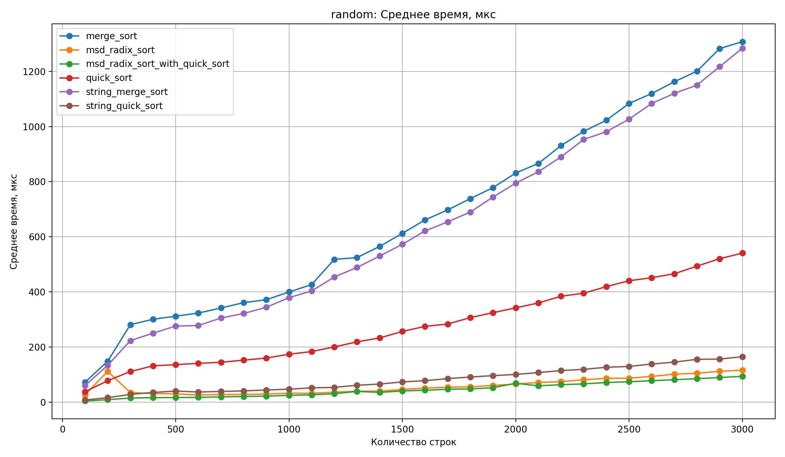
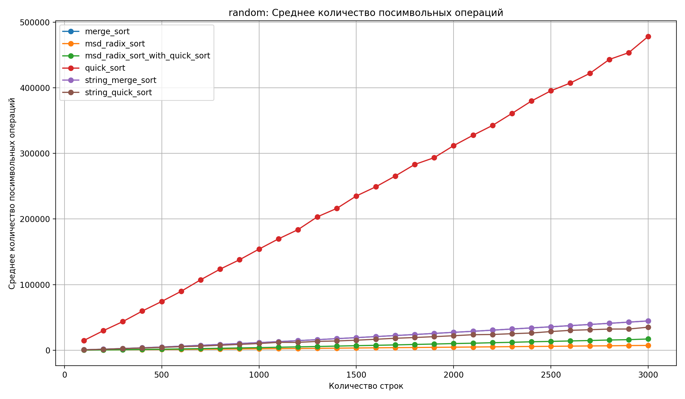
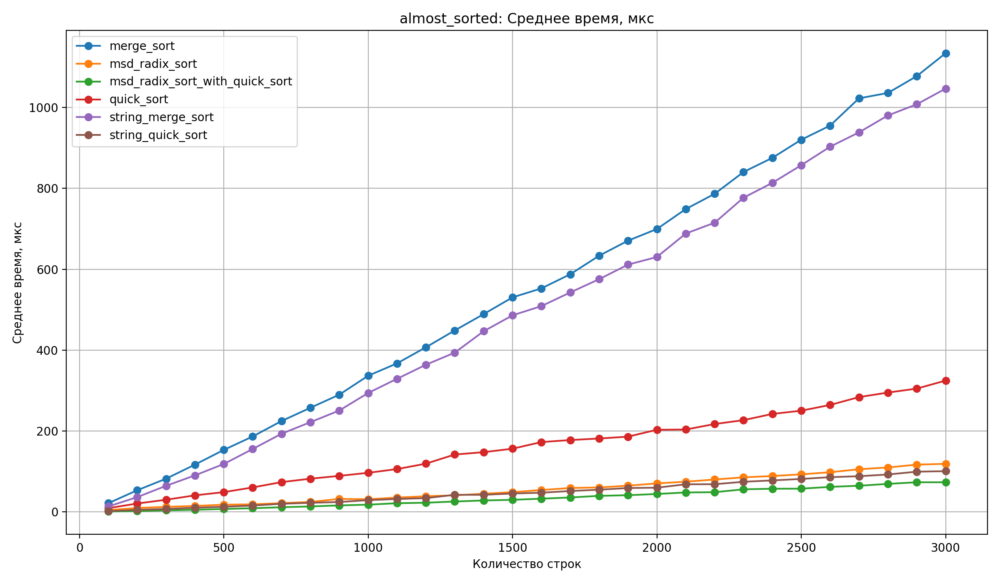
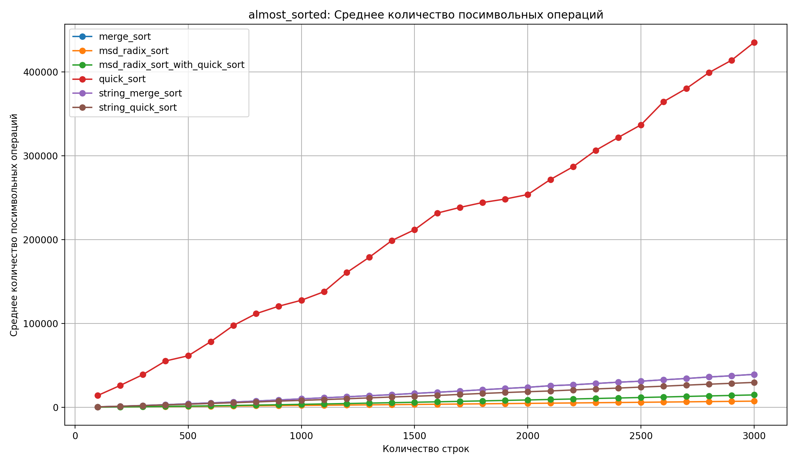
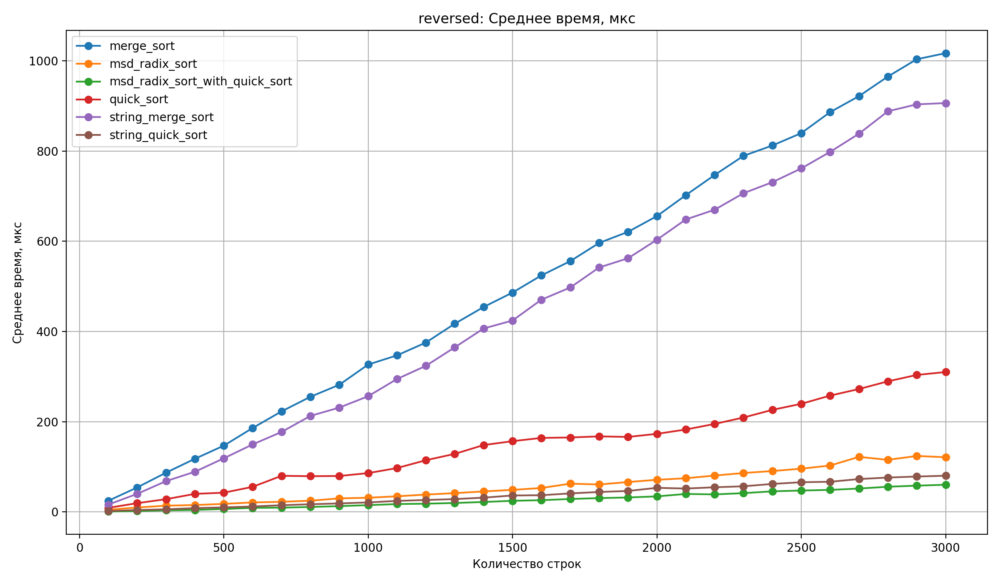
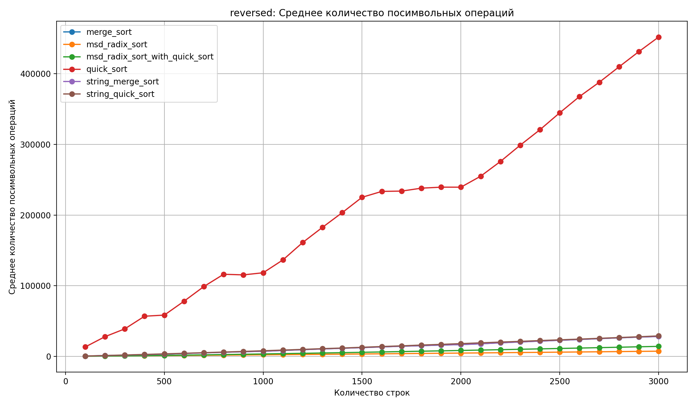

GitHub: https://github.com/karnaukhovGA69/SET9-69--
| Задача | Посылка |
|---|---|
| A1m | 375980010 |
| A1q | 375980021 |
| A1r | 375980403 |
| A1rq | 375980411 |
 |
 |
| Среднее время работы | Среднее число посимвольных операций |
 |
 |
| Среднее время работы | Среднее число посимвольных операций |
 |
 |
| Среднее время работы | Среднее число посимвольных операций |
random, almost_sorted и reversed самым быстрым оказался гибридный MSD Radix Sort с переходом на QuickSort для малых подмассивов. Он стабильно выигрывает по времени и заметно опережает остальные алгоритмы на больших входных данных.MSD Radix Sort чаще всего занимает второе или третье место. По времени он уступает гибридной версии, но все равно выглядит быстрее стандартных сравнительных сортировок.QuickSort и MergeSort заметно уступают модифицированным строковым алгоритмам. Текущая реализация String MergeSort по времени тоже не дает преимущества.MSD Radix Sort. По данным эксперимента он остается лидером и на случайных строках, и на почти отсортированных, и на обратно отсортированных массивах.QuickSort на маленьких подмассивах она по операциям немного проигрывает чистому MSD.QuickSort дает самый высокий показатель посимвольных сравнений с большим отрывом. При полном сравнении строк его стоимость растет намного быстрее остальных алгоритмов.String MergeSort не показывает преимущества относительно обычного MergeSort. Их кривые по числу операций почти совпадают, поэтому эффекта от оптимизации здесь не видно.